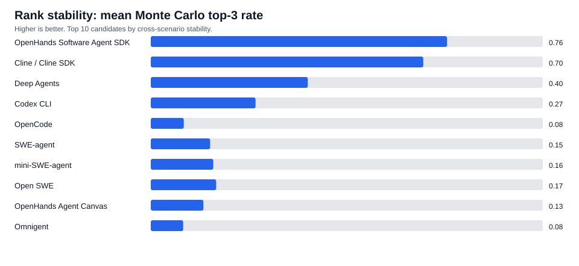
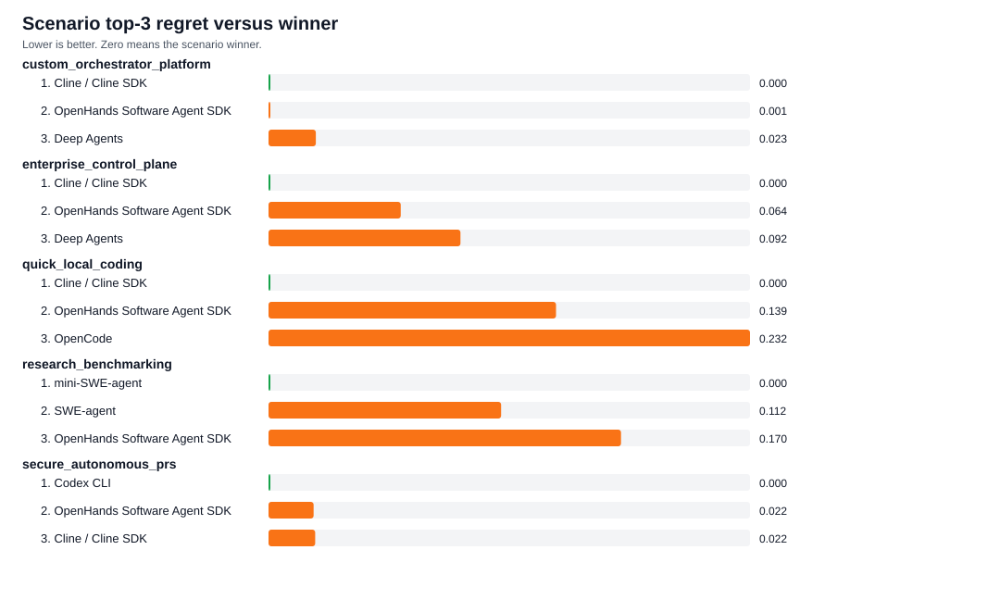
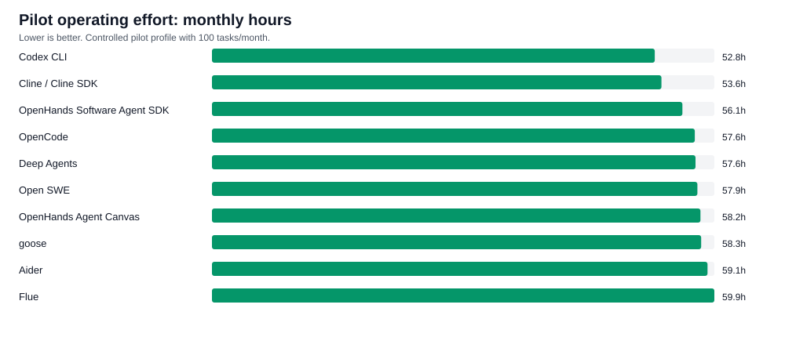
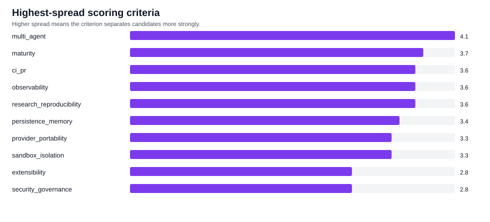

OpenHands SDK
Candidato mas estable cross-scenario. Encaja cuando se necesita una plataforma propia, artefactos operativos y flexibilidad.
Reporte final global | SDLC AI Orchestrators
Este sitio consolida el material recopilado en el repositorio gvillarroel/sdlc: candidatos open source permisivos, simulaciones, sandboxing, costos, evidencia, riesgos, plan de piloto y trazabilidad para una decision real de adopcion.
La conclusion central es que no existe un ganador universal. La herramienta correcta depende de si el equipo necesita una plataforma programable, PRs autonomos con sandboxing, productividad local, benchmarking reproducible o un control plane enterprise.
El repositorio convierte una conversacion inicial sobre alternativas de orquestacion en una evaluacion reproducible: filtra licencias, puntua capacidades, genera rankings por escenario, mide estabilidad, revisa costos y riesgos, separa el problema de sandboxing y aterriza todo en un protocolo de piloto.
El sistema funciona como una cadena de evidencia. Los archivos data/*.json definen candidatos, criterios, escenarios, riesgos, tareas piloto y supuestos. Los scripts en scripts/ transforman esos datos en results/*.csv. Los reportes interpretan los resultados y las plantillas convierten la simulacion en evidencia de piloto.


| Escenario | Lider simulado | Lectura practica |
|---|---|---|
| Custom orchestrator platform | Cline / Cline SDK, casi empatado con OpenHands SDK |
La diferencia es demasiado estrecha para decidir sin piloto; comparar ambos con Deep Agents. |
| Secure autonomous PRs | Codex CLI |
Fuerte si la dependencia OpenAI es aceptable y el foco es sandboxing, approvals y PR workflow. |
| Quick local coding | Cline / Cline SDK |
Mejor opcion inicial para productividad local; OpenCode y Aider sirven como benchmarks ligeros. |
| Research benchmarking | mini-SWE-agent |
Baseline reproducible para ablations; comparar con SWE-agent cuando se requiera mas flujo operativo. |
| Enterprise control plane | Cline / Cline SDK |
Validar gobernanza, multi-equipo, observabilidad y costo antes de convertirlo en plataforma. |
La senal mas importante no es el primer lugar aislado. OpenHands Software Agent SDK aparece top 3 en todos los escenarios; Cline / Cline SDK aparece top 3 en cuatro de cinco y gana escenarios centrados en workflow. Esa combinacion justifica un piloto head-to-head.
Candidato mas estable cross-scenario. Encaja cuando se necesita una plataforma propia, artefactos operativos y flexibilidad.
Fuerte en workflow humano, productividad local y control-plane ligero. Requiere medir carga de aprobaciones.
Buen comparador para patrones multi-agent y orquestacion programable, sin liderar de forma dominante.
Destaca en PRs autonomos seguros y bajo esfuerzo inicial. El tradeoff es lock-in y validacion estricta de politica.
Mejor baseline reproducible para benchmarking e investigacion. No sustituye la evaluacion operativa interna.
Referencia madura para issue-resolution research y comparaciones contra agentes mas orientados a producto.
El reporte dedicado de sandboxing separa el runtime de agente de la frontera de ejecucion. La evaluacion distingue entre virtual workspaces, contenedores, managed sandboxes, microVMs y opciones self-hosted enterprise.
La regla operativa es simple: approvals, prompts y convenciones reducen riesgo, pero no equivalen a aislamiento duro. Para codigo no confiable se deben validar boundaries, secretos, red, tenancy, observabilidad y costo bajo carga sostenida.
| Escenario sandbox | Lider o grupo lider | Implicacion |
|---|---|---|
| Local developer agents | Flue virtual sandbox, Daytona, Kubernetes hardened pods | Para tareas locales, ergonomia y staging pueden pesar tanto como aislamiento duro. |
| Autonomous PR security | Daytona | Fuerte si pasa revision de aislamiento, tenancy, credenciales y costos. |
| Untrusted user code | Daytona, E2B, Modal | Managed sandboxes son atractivos, pero requieren procurement y security review. |
| Enterprise self-hosted | Kubernetes hardened pods, Firecracker, Kata | Requiere capacidad real de plataforma, RuntimeClass, observabilidad e imagenes controladas. |
La evidencia recopilada muestra que AI-native creation baja el costo de prototipo, pero desplaza la dificultad hacia distribucion, diferenciacion, soporte, seguridad y confianza. Construir rapido no garantiza producto defendible ni mantenible.
Prompt injection, secretos, red amplia y escapes de workspace deben tener fixtures de prueba y pass conditions.
Churn de APIs, observabilidad insuficiente y costos de control plane pueden borrar la ganancia inicial.
Sin provenance, tests y diffs enfocados, la revision humana se vuelve cuello de botella y no control real.


El piloto debe durar dos semanas y comparar candidatos sobre las mismas tareas. La decision post-piloto debe capturar exito funcional, calidad del diff, costo, latencia, intervenciones humanas, reproduccion de fallos, seguridad y facilidad de mantenimiento.
data/pilot_tasks.json.templates/pilot_run_log.csv.templates/reviewer_scorecard.md.templates/security_gate_checklist.md.scripts/score_pilot_results.py.El reporte publicado resume los hallazgos, pero la auditoria real vive en los artefactos versionados del repositorio.